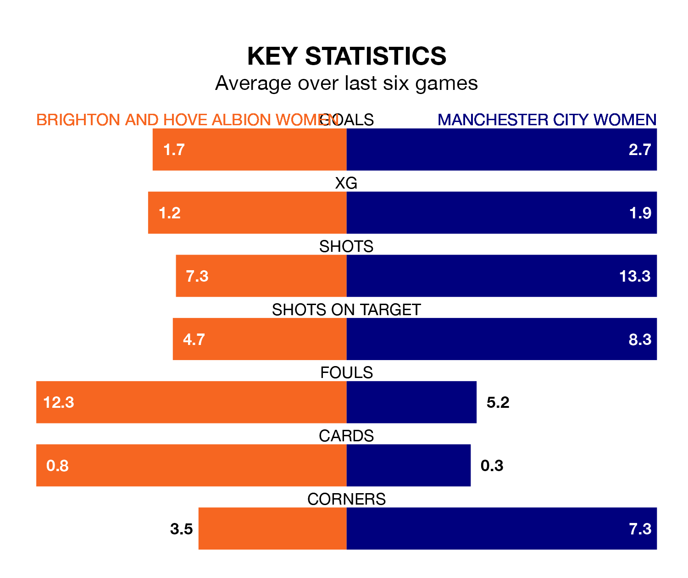

Brighton and Hove Albion Women host Manchester City Women in Sunday lunchtime's match at the Broadfield Stadium looking to bounce back from defeat last time out in the FA Women's Super League.
The Seagulls, who sit ninth in the league after 15 games, fell to a 3-7 away defeat to Bristol City Women on March 3.
They face a Manchester City side who picked up a win in their last match, a 2-1 victory against Everton Women, and who sit second in the table.
Brighton & Hove Albion are in disappointing form in the FA Women's Super League, with two wins and four losses from their last six games.
With six wins and no losses over that period, Manchester City's form is much better – they have taken 18 points from 18, compared to the Seagulls's six.
With 38 goals in 15 games so far this season, City are the league's second-highest scorers with 2.5 goals per game. And they are conceding fewer than average, letting in nine goals at a rate of 0.6 per game.
The hosts, meanwhile, are below average scorers, with 1.3 goals per game, compared to a league average of 1.7. They have conceded 2.2 goals per game.
In Khadija Monifa Shaw, the away side have the league's most on-form striker so far this season. She has notched 15 goals in 14 appearances.
Her goal rate of one every 72 minutes is quicker than that of Elisabeth Terland, Brighton & Hove Albion's top scorer with a goal every 106 minutes, and a total of 11 goals in 15 games.
In the last 10 years, Brighton & Hove Albion and Manchester City have played each other on 12 occasions. Brighton & Hove Albion won one of them, Manchester City 10, and they drew once.
On average, the Seagulls scored 0.6 goals and City 4.0 in those matches.
Their last meeting was on November 12, when Brighton & Hove Albion won 1-0 away.
Updated: 09:34 (UTC), 08/03/24